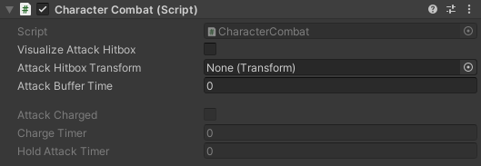

CharacterCombat
SWITCH TO SCRIPTINGOverview
The CharacterCombat class is meticulously designed to oversee all combat-related actions in your game. Paired seamlessly with the EntityHealth
class and the AttackSO scriptable object, it empowers you to finely manage your character's combat behaviour. Through
this class, you gain the ability to craft and customize attacks, shaping the combat dynamics of your game to your liking.
This component pairs well with CombatSystemProjectile and AttackSO components found in the asset.
Note that the CharacterCombat requires the following components to operate correctly:
When attaching the script to your character object, the referenced scripts will automatically be included.
Inspector
| VisualizeAttackHitbox | Set to true, if you want to visualize the hitbox of the current attack. |
| AttackHitboxTransform | The transform of the attack hitbox. (See Combat System for more information) |
| AttackBufferTime |
Specifies the time window during which the player can initiate a follow-up attack after an initial attack.
For example, if the value is set to 0.1f and the assigned attack key is pressed 0.1 seconds or less before the attack is completed, the character will initiate a follow-up attack. |
Current Attack Information
| AttackCharged | If a charged attack is being casted, this value will be set to true once the attack is fully charged. |
| ChargeTimer | Defines the duration required to fully charge an attack, based on the attack configuration. |
| HoldAttackTimer | Specifies the maximum duration an attack can be held before the character is compelled to release or cancel it, as per the attack configuration. |